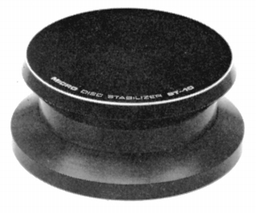
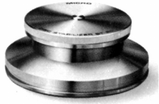
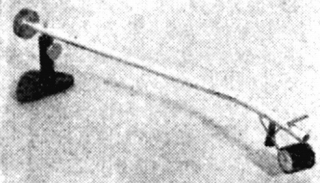
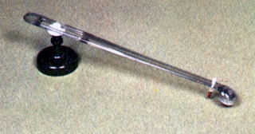
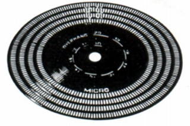
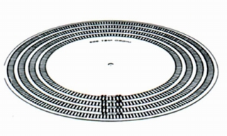

その他の製品
�@スタビライザー
ST-10

■価格 6,000円
■備考 直径7.9×H3.2cm
材質は真鍮
重量 510g
ブラックとシルバーの2種類あり
ST-20

■価格 13,000円
■備考 直径7.9×H3.0cm
重量 800g
材質は銅
コレクトチャック方式、
ディスクのそり修正機能あり
修正リング3個付属
�Aクリーナー
MDP-3

■価格 600円
■備考 オートマチッククリーナー
MDP-5

■価格 700円
■備考 オートマチッククリーナー
価格は1973年頃のもの
1974年頃は\1,200
�Bストロボスコープ
MST-105

■価格 500円
■備考 33
1/3、45回転対応 直径10.5�p
MST-305

■価格 8,000円
■備考 大型ストロボスコープ、ゴールド仕上げ 直径30.5�p